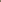
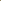

Sprung Monuments
a collaboration
by:
Susan Bee and Charles Bernstein
Working Note
Sprung Monuments, which I painted especially for the Poetry Plastique show, includes lines and fragments of poems by Charles Bernstein. We have collaborated on five books together: The Occurrence of Tune (Segue, 1981), The Nude Formalism (Sun & Moon, 1989), Fool’s Gold (Chax, 1991), Little Orphan Anagram (Granary Books, 1997), and Log Rhythms (Granary Books, 1998). In addition, I have done several artist’s books on my own and have a new collaborative book with the poet Susan Howe, Bed Hangings, forthcoming in 2001 from Granary Books. Notably, although painting is my main preoccupation, this is the first time I have incorporated lines from Charles’ poetry into one of my paintings.
Over the years, I have painted many works with images alone. Since 1996, I have occasionally incorporated titles and blurbs from B-movie and film noir movie posters and slogans and titles from pulp novels into various paintings. Text alters the framework for the images and repositions the viewers in relation to the paintings. In Sprung Monuments, I have reset excerpts of several of the poems I had previously set in Little Orphan Anagram and Log Rhythms.
The settings in the painting are different from those in the books. Here I have used the absurdist humor and mock or perhaps all-too-real profundity of the line, “Poetry fakes nothing happening,” to show a man rained down on by relentless trickles of enamel paint as the cloud encompassing this thought nears him. Meanwhile, the poem “My son is going dumb I would pluck out my neighbor’s tongue if it would do any good” forms an oval shield of words over the man’s belly, suggesting that these are the thoughts of a worried father. “His wife she stood with a loaded gun,” the bungled quotation from Emily Dickinson (“My Life had stood-a Loaded Gun-”), is framed by an errant 1940s woman watching her lover escape from an open window, as well as a postcard of a loving 1950s father hanging a horseshoe over his family’s door frame. The visual framing positions the text in the space between family and seduction, sexual longing, and family values.
The images in the painting touch on the humorous, mystical, whimsical, science fictional, surreal, and philosophic underpinnings of the poems. But each panel of the painting puts forward its own interpretation. Sometimes the images focus on just one word of the poem and sometimes they stand in a stark contrast to the poem. I am not interested in a strict illustrational approach to the words but rather an oblique associative relation between image and poem.
The image is an echo and an accompaniment of the poem. Much like writing music to a libretto—the words and the music stand in inverse relationship to each other. In setting these poems however, I am also interested in legibility. The poems float in a clouds, bubbles, and rocks, sometimes they are encased in linear boxes. They become part of the artificial landscape created by the gridded space of the painting.
Each of these poems is set in its own space. I also think of these small scenes as a storyboard or cartoon frames or as fragments of the whole. As the poem puts it: “The parts are greater that the sum of the whole.” This applies to the use of details in the painting. The painting can be viewed in close-ups as a highly detailed reading of the individual lines of the poems or a whole, where the fragments of a puzzle fall into place to lend the appearance of a false unity. This unity is created by the painted and collaged surface of the grid and is held together by the boundaries of the stretched canvas.
This is also my sense of the relationship between the artist and the poet who collaborate together. The poems and images form a larger symbiosis that enhances the interpretation of the synthetic whole. Thus, the idea of “poetry plastique” is an interpretative visualization of the underlying abstract imagery and mood and emotions of the poems. Particularly, when dealing with ironic, dense, and open-ended poems like Charles’s, I feel free to provide my own interpretive response.
Different poets suggest different approaches to collaboration. For example, in setting the poems of Susan Howe in Bed Hangings, I felt more directed by the poem’s historical subject matter: Puritans, religion, colonial America, fabric design, and textiles. All of these were of major importance to the interpretation and imagery of the pictures and so my images centered upon them.
In collaborations between poets and visual artists, I feel that the artist should match the wavelength of her or his artistic intuition and vision to the intensity and demands of the poet’s words. It is a challenge and pleasure to be able to form visual reponses to overpowering verbal stimulants. Some of my inspirations have been the medieval illuminated pages, the books of William Blake and William Morris, as well as the work of Max Ernst, John Heartfield, and Hannah Höch. But, most of all, the amazing ability of writers to conjure up whole worlds of images with their words continues to fascinate and inspire me to follow suit with a visual response.
—Susan Bee
|
|
|
|
Bio: Susan Bee and Charles Bernstein have undertaken a number of collaborations, including Log Rhythms (Granary books, 1998), Little Orphan Anagram (Granary Books, 1997), Fool's Gold 's (Chax Press, 1991), and The Nude Formalism (Sun & Moon, 1989). Bee's other recent collaborations include Bed Hangings with Susan Howe (Granary Books, 2001) and A Girl's Life with Johanna Drucker (forthcoming Granary Books, 2001). She has also co-edited M/E/A/N/I/N/G: An Anthology of Artists' Writings, Theory and Criticism (Duke University Press, 2000) with Mira Schor.
Bio:
Charles Bernstein's most recent collection is Republics of Reality:
1975-1995 (Sun & Moon, 2000). His poetry collections include Dark
City (Sun & Moon, 1994), Rough Trade (Sun & Moon, 1991),
and The Sophist (Sun & Moon, 1987) while his essay collections
include My Way: Speeches and Poems (University of Chicago Press,
1999), A Poetics (Harvard University Press, 1992), and Content's
Dream: 1975-1984 (Sun & Moon Press, 1986). Bernstein hosted and
co-produced the LINEbreak series and also co-edited L=A=N=G=U=A=G=E
with Bruce Andrews.
